This fan work is created solely for non-profit, entertainment purposes under the
principles of "fair use."
Star vs. The Forces of Evil is the intellectual property of Daron Nefcy and Disney Animation Studios. This
fanfiction, along with any related audio or visual content, is a tribute to the original series and is not
intended to infringe upon the rights of the creators or owners. All characters, settings, and other elements
from Star vs. The Forces of Evil remain the property of their rightful owners. This work is unofficial and
is not endorsed or sponsored by the creators or Disney
This work is protected under the doctrine of Fair Use (17 U.S.C. § 107), which permits limited use of
copyrighted material without the need for permission from the rights holders for purposes such as criticism,
comment, news reporting, teaching, scholarship, or research.
And that was just the intro (WIP)